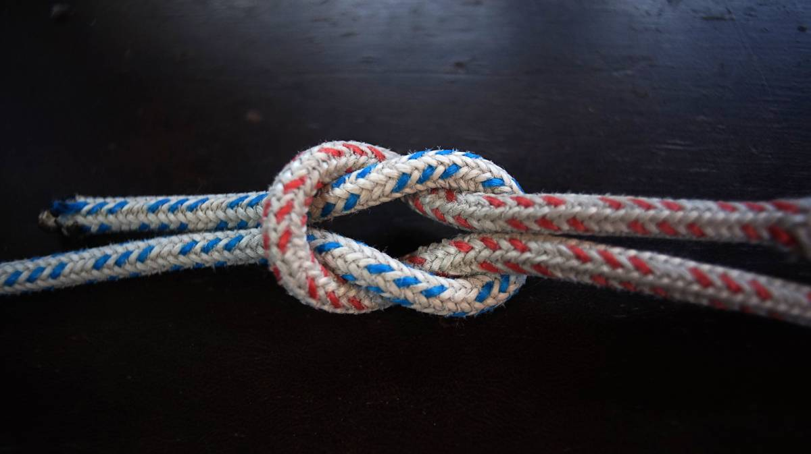

knots
Terminology
Bend. A knot used to join two ropes.
Binding knot. A knot that constricts a line/object, with the ends joined or tucked under the turns of a knot.
Hitch. A knot that joins a rope to an object (ring, rail, post etc).
Friction hitch. A knot that binds one rope to another and that allows for re-positioning.
Jamming. A knot that jams(difficult to untie) after use.
Non-jamming. A knot that tightens when under load, but that doesn't jam.
Loop knot. A knot used to create a closed circle.
Standing end. The part of a rope that is not made into a knot.
Working end. The part of a rope that is made into a knot.
Knots to learn to tie behind your back:
- Name: Square knot (or reef knot)
- Type: Binding(friction)
- Function: Secures a line around an object. Not suitable with lines of different diameters, not as secure as a bend(unless additional knots are used).
- Marine use: Used to secure a reef in a sail.
- Name: Sheet Bend
- Type: Bend
- Function: Joins lines of different diameters, can work loose when there is no load (for extra strength make a double sheet bend)
- Marine use: Used to extend a line, to make a tow rope, etc.
{kind=link}
- Name: Round turn and two half-hitches
- Type: Hitch
- Function: Secures a line to a fixed object
- Marine use: Used to tie a dockline around a bull rail, or post.
- Name: Bowline
- Type: Loop
- Function: Makes a fixed loop at the end of a line. This is a non-jamming knot. With certain materials, can work its way loose when there is no load.
- Marine use: Used to secure the working end of a sheet to the clew of a headsail.

- Name: Double fisherman's knot
- Type: Bend
- Function: Makes a secure closed loop. This knot is made up of 2 knots that slide together when tightened, to form the final knot (kids use this knot to make simple adjustable bracelets).
- Marine use: Used to make a closed loop to use with a prusik knot to climb the mast.
- Name: Rolling hitch
- Type: Hitch
- Function: Used to tie one rope to another, or to a pole, for lengthwise pull along an object rather than for a pull at right angles (works for a single direction of pull). It is effective for moderate loads, won't hold as well with modern slippery synthetic ropes (use gripping sailor's hitch instead).
- Marine use: Used to pull a line lengthwise, say to take pressure off a sheet in the event of a jam.
- Name: Gripping sailor's hitch
- Type: Hitch
- Function: Used to tie a rope to an object, or to another rope. This knot doesn't jam, and won't slip when pulled lengthwise along the object. It has more grip than a rolling hitch, even on tapered objects and performs well with synthetic ropes.
- Marine use: Used to pull a line lengthwise with a heavy load at the end, like an anchor rode.

- Name: Prusik knot
- Type: Hitch, binding(friction).
- Function: Used to attach a loop of cord around a rope, it locks onto the rope when under load, but slips up and down well when the load is released.
- Marine use: Used instead of ascenders to climb a mast, doesn't damage the rope it is secured to when sliding.